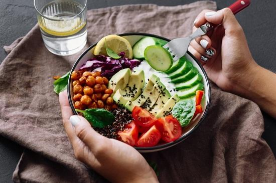
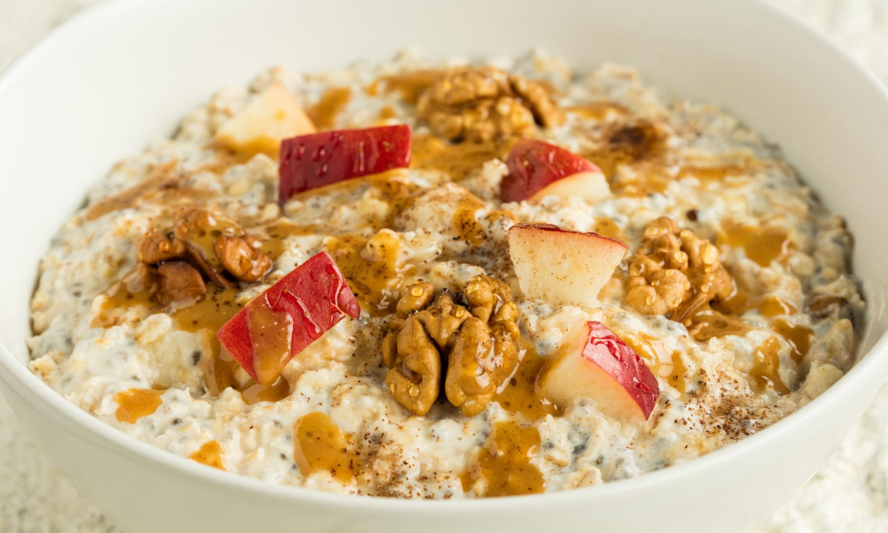
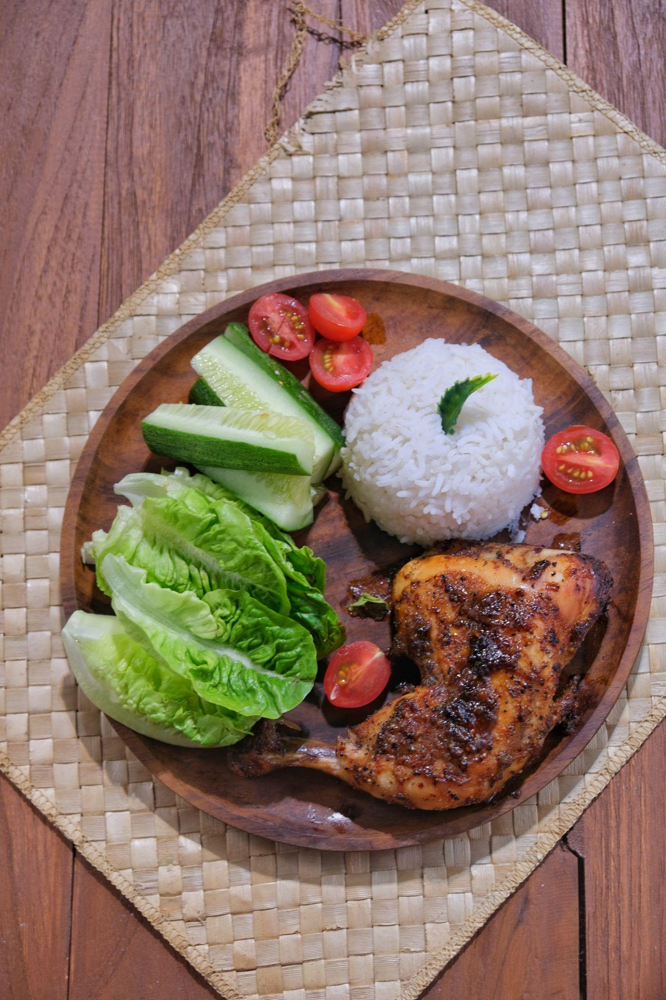
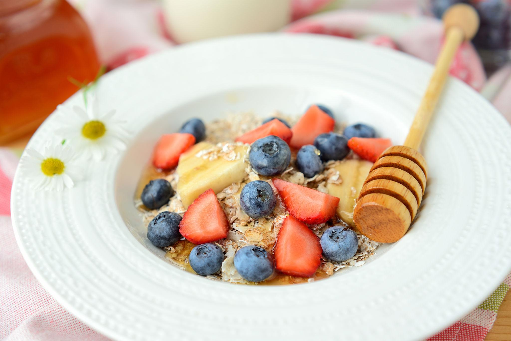
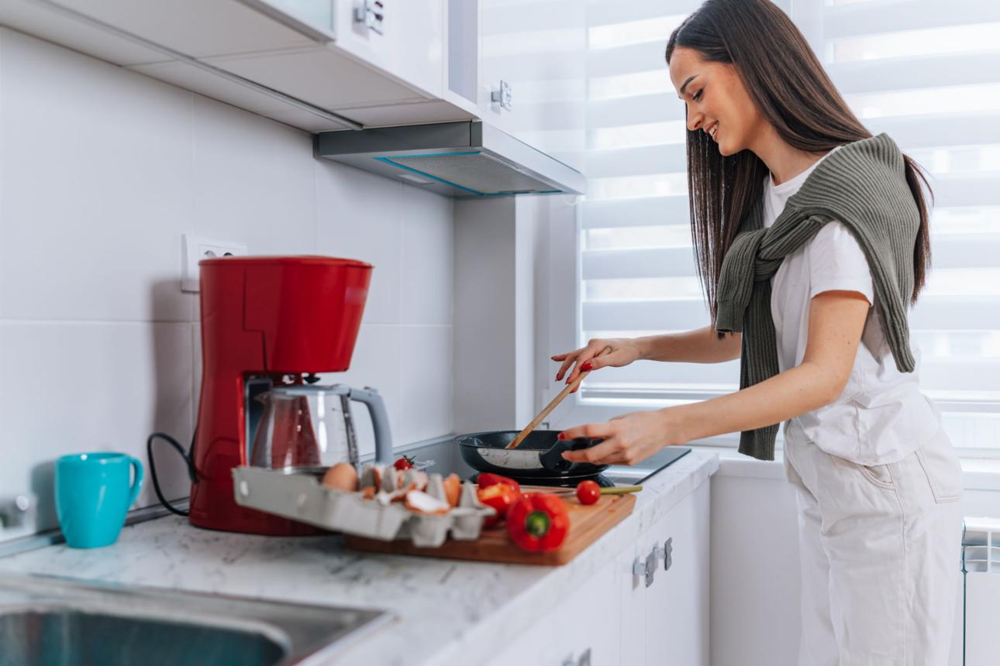

Fresh Garden Salad
A colorful mix of vegetables packed with vitamins and fiber.
Discover delicious, nutritious recipes designed to support a healthy lifestyle and balanced diet.

A colorful mix of vegetables packed with vitamins and fiber.

Rich in whole grains and topped with fresh fruits.

Lean protein served with vegetables and brown rice.

Refreshing blend of berries, yogurt, and natural sweetness.

Healthy cooking is an important part of maintaining a balanced lifestyle. By preparing nutritious meals at home, individuals can improve their health, manage their weight, boost energy levels, and reduce the intake of unhealthy ingredients. Healthy cooking also saves money, encourages better eating habits, and promotes overall well-being for individuals and families.
Always strive to keep good healthy meal Recipes!